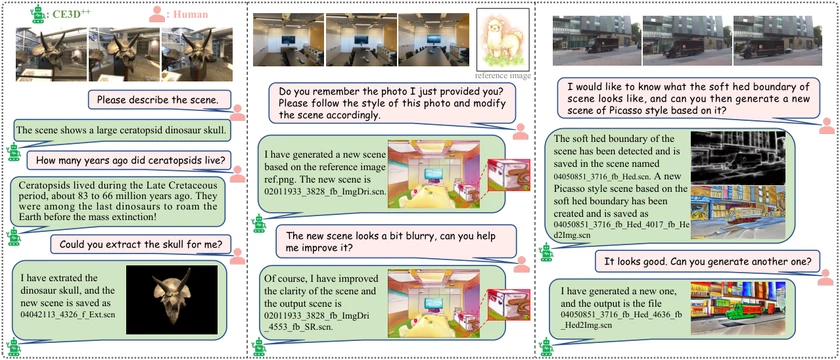
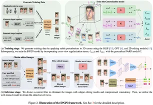
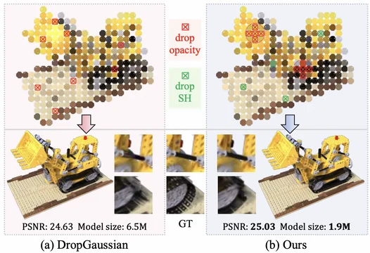

 TPAMI · Accepted Chat-Edit-3D++: Interactive 3D and 4D Scene Editing via Large Language Models Shuangkang Fang, Yufeng Wang, Yi-Hsuan Tsai, Wenrui Ding, Yi Yang, Shuchang Zhou, Ming-Hsuan Yang. arXiv Project Code
IJCV PVD-AL: Progressive Volume Distillation with Active Learning for Efficient Conversion Between Different NeRF Architectures Shuangkang Fang, Yufeng Wang, Yi Yang, Weixin Xu, Heng Wang, Wenrui Ding, Shuchang Zhou. Project arXiv
 TVCG Editing 3D Scenes via Text Prompts without Retraining Shuangkang Fang, Yufeng Wang, Yi-Hsuan Tsai, Yi Yang, Wenrui Ding, Shuchang Zhou, Ming-Hsuan Yang. Project arXiv
 CVPR Dropping Anchor and Spherical Harmonics for Sparse-view Gaussian Splatting Shuangkang Fang, I-Chao Shen, Xuanyang Zhang, Zesheng Wang, Yufeng Wang, Wenrui Ding, Gang Yu, Takeo Igarashi. Project arXiv
ICCV · Highlight MeshLLM: Empowering Large Language Models to Progressively Understand and Generate 3D Mesh Shuangkang Fang, I-Chao Shen, Yufeng Wang, Yi-Hsuan Tsai, Yi Yang, Shuchang Zhou, Wenrui Ding, Takeo Igarashi, Ming-Hsuan Yang. Project Paper
ICCV NeRF Is a Valuable Assistant for 3D Gaussian Splatting Shuangkang Fang, I-Chao Shen, Takeo Igarashi, Yufeng Wang, ZeSheng Wang, Yi Yang, Wenrui Ding, Shuchang Zhou. Project Paper
ECCV Chat-Edit-3D: Interactive 3D Scene Editing via Text Prompts Shuangkang Fang, Yufeng Wang, Yi-Hsuan Tsai, Yi Yang, Wenrui Ding, Shuchang Zhou, Ming-Hsuan Yang. Project arXiv
TGRS UAV-ENeRF: Text-driven UAV Scene Editing with Neural Radiance Fields Yufeng Wang, Shuangkang Fang (equal contribution), Huayu Zhang, Hongguang Li, Zehao Zhang, Xianlin Zeng, Wenrui Ding. Paper
AAAI · Oral One is All: Bridging the Gap Between Neural Radiance Fields Architectures with Progressive Volume Distillation Shuangkang Fang, Weixin Xu, Heng Wang, Yi Yang, Yufeng Wang, Shuchang Zhou. Project arXiv
BMVC DFFG: Fast Gradient Iteration for Data-free Quantization Huixing Leng, Shuangkang Fang (equal contribution), Yufeng Wang, Zehao Zhang, Dacheng Qi, Wenrui Ding. Paper